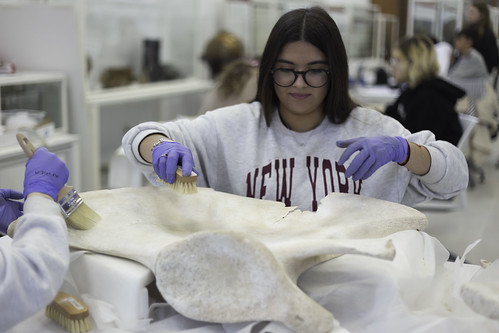
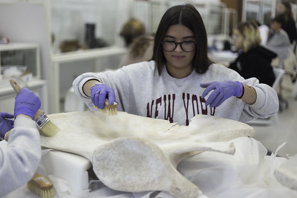

Una balena històrica de 15 metres per al ‘Ramis’
Prop de cinquanta alumnes d'ESO i Batxillerat de l'IES Joan Ramis i Ramis de Maó participen en uns tallers per a la recuperació i muntatge d'un esquelet de balena, de 15 metres de llargària i dos d'amplària. Aquesta balena va ser capturada fa més de cent anys en aigües de Punta Prima i, després d’un llarg viatge, està previst que en dos o tres cursos quedi exposada al museu del centre.
La balena va ser capturada el 12 de desembre de 1912 a les proximitats de Punta Prima. Els pescadors de la zona van intentar rescatar-la sense èxit i, finalment, van decidir sacrificar-la. Posteriorment, el cos del cetaci va ser arrossegat fins al port de Maó, on es va descarnar i es van aprofitar diversos materials com l'oli.
El 1916, l'esquelet va ser exposat per la família Maspoch en una casa senyorial que després es convertiria en el Cine Victoria. Més tard, el 1934, va ser traslladat a l’Institut de Maó, ubicat llavors a l’antic monestir de Sant Francesc.
El curs 1963-1964, quan l’institut es va traslladar al carrer Vives Llull, l’esquelet va quedar a l’antiga seu fins que, el 2014, amb les obres al Museu de Menorca, les restes de la balena es van traslladar al Joan Ramis. Ara, gràcies a obres d’ampliació i el suport de la Fundació Catalina Mercadal-Asmar, l’esquelet podrà ser exposat.
Un projecte col·laboratiu
Aquest projecte didàctic implica uns cinquanta alumnes de 2n i 3r d’ESO, de Servei de la Comunitat, i de 1r de Batxillerat, de l’assignatura Història de les Balears. L’equip està coordinat pel professor Enric Camps i compta amb el suport d’altres professors i col·laboradors externs, com l’enginyer Lluís Mir, l’arquitecte Joan J. Gomila i l’empresa Tot Inox, de Xavi Sintes.
 
